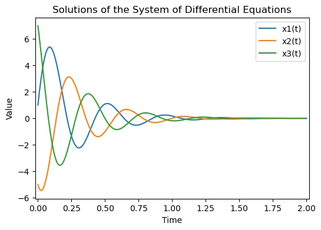
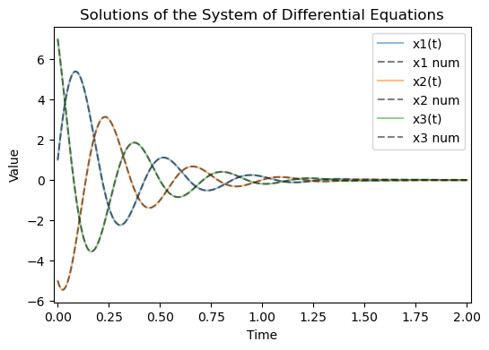

Chapter 4¶
Higher dimensional linear systems¶
Code by : Abolfazl Ziaeemehr - https://github.com/Ziaeemehr

[ ]:
# uncomment and run this line to install the package on colab
# !pip install "git+https://github.com/Ziaeemehr/spikes.git" -q
[2]:
import sympy
import sympy as sp
import numpy as np
from scipy.linalg import eig
from IPython.display import display, Math
sympy.init_printing()
Eq. 4.2¶
\[\begin{split}\frac{d}{dt}
\begin{pmatrix}
E_1 \\
E_2 \\
E_3
\end{pmatrix} =
\begin{pmatrix}
-5 & -10 & 7 \\
7& -5& -10 \\
-10& 7 & -5
\end{pmatrix}
\begin{pmatrix}
E_1 \\
E_2 \\
E_3
\end{pmatrix}\end{split}\]
[2]:
A = np.array([[-5, -10, 7], [7, -5, -10], [-10, 7, -5]])
B = np.array([0,0,0])
X0 = np.array([1, -5, 7])
t_range = np.linspace(0, 2, 1000)
# eigenvalues, eigenvectors = eig(A)
# eigenvalues
[3]:
from spikes.solver import solve_system_of_equations
final_solution, x_values = solve_system_of_equations(A, B, X0, t_range)
for i, sol in enumerate(final_solution, 1):
display(Math(f'x_{i}(t) = {sp.latex(sol)}'))
$\displaystyle x_1(t) = e^{- 8 t} + 4 \sqrt{3} e^{- \frac{7 t}{2}} \sin{\left(\frac{17 \sqrt{3} t}{2} \right)}$
$\displaystyle x_2(t) = e^{- 8 t} - 2 \sqrt{3} e^{- \frac{7 t}{2}} \sin{\left(\frac{17 \sqrt{3} t}{2} \right)} - 6 e^{- \frac{7 t}{2}} \cos{\left(\frac{17 \sqrt{3} t}{2} \right)}$
$\displaystyle x_3(t) = e^{- 8 t} - 2 \sqrt{3} e^{- \frac{7 t}{2}} \sin{\left(\frac{17 \sqrt{3} t}{2} \right)} + 6 e^{- \frac{7 t}{2}} \cos{\left(\frac{17 \sqrt{3} t}{2} \right)}$
plot the evaluation of analytical solution over a given time interval:
[4]:
import numpy as np
from sympy import lambdify
import matplotlib.pyplot as plt
plt.figure(figsize=(6, 4))
for i in range(3):
plt.plot(t_range, x_values[i], label=f"x{i+1}(t)")
plt.xlabel('Time')
plt.ylabel('Value')
plt.margins(x=0.01)
plt.title('Solutions of the System of Differential Equations')
plt.legend();

Numerical solution to compare:
[5]:
import numpy as np
import matplotlib.pyplot as plt
from scipy.integrate import odeint
def system(X, t, A):
return A.dot(X)
A = np.array([[-5, -10, 7],
[7, -5, -10],
[-10, 7, -5]])
X0 = np.array([1, -5, 7])
# Time points
t = np.linspace(0, 2, 1000)
solution_numerical = odeint(system, X0, t, args=(A,))
plt.figure(figsize=(6, 4))
for i in range(3):
plt.plot(t_range, x_values[i], label=f"x{i+1}(t)", alpha=0.5)
plt.plot(t, solution_numerical[:, i], 'k--', label=f"x{i+1} num", alpha=0.5)
plt.xlabel('Time')
plt.ylabel('Value')
plt.margins(x=0.01)
plt.title('Solutions of the System of Differential Equations')
plt.legend();

4.3 Oscillatory control of respiration¶
[9]:
import sympy
from spikes.utils import routh
from spikes.utils import characteristic_polynomial
# Example usage
matrix = [[0, 1], [-2, -3]]
polynomial = characteristic_polynomial(matrix)
HR = routh(polynomial)
polynomial
[9]:
$\displaystyle \operatorname{Poly}{\left( x^{2} + 3 x + 2, x, domain=\mathbb{Z} \right)}$
[10]:
HR
[10]:
$\displaystyle \left[\begin{matrix}1 & 2\\3 & 0\\2 & 0\end{matrix}\right]$
[54]:
g = sympy.Symbol('g')
A = sympy.Matrix([
[-3, 0, -g, -5],
[-5, -3, 0, -g],
[-g, -5, -3, 0],
[0, -g, -5, -3]
])
p = characteristic_polynomial(A)
sympy.pprint(A)
⎡-3 0 -g -5⎤
⎢ ⎥
⎢-5 -3 0 -g⎥
⎢ ⎥
⎢-g -5 -3 0 ⎥
⎢ ⎥
⎣0 -g -5 -3⎦
[65]:
# p
[64]:
# HR = routh(p)
# HR
For stability, the left hand column must have entries with all the same signs
[63]:
# sympy.solve([e > 0 for e in HR[:, 0]], g)
[51]:
A.eigenvals()# , A.eigenvects()
[51]:
{2 - g: 1, -g - 8: 1, g - 3 - 5*I: 1, g - 3 + 5*I: 1}
[62]:
char_poly = A.charpoly().as_expr()
lam = sympy.Symbol('lambda')
eigenvalues = sp.solve(char_poly, lam)
eigenvalues
[62]:
[2 - g, -g - 8, g - 3 - 5*I, g - 3 + 5*I]
so to have oscillatory behaviour, we need to have a pair of complex conjugates eigenvalues, with real part of zero or negative and imaginary part of non-zero.
g - 3 + 5 * I
g - 3 - 5 * I
g = 3
[ ]: